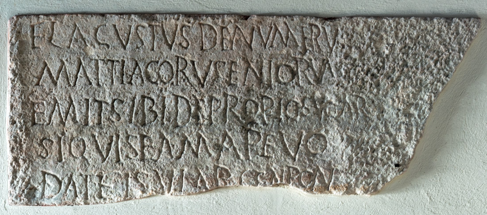

The Inscription of Agustus
PHYSICAL DESCRIPTION
- Type
- Lateral panel of the sarcophagus.
- Material(s)
- Limestone.
- Execution
- Inscribed.
- Dimensions
- 43 × 107 cm
- Epigraphic Field
- 43 × 107 cm
- Letters Height
- 5-7 cm
Palaeographic comment
Dextrorse direction, horizontal alignment, vertical module, irregular ductus, left-aligned layout.
A occasionally with a broken crossbar.
G without a horizontal bar, featuring a tail that extends below the baseline.

INSCRIPTION
INTERPRETATIVE TRANSCRIPTION
, de numeru (!)
Mattiacoru<m> senioru⸢m⸣,
emit sibi de propio (!) suo ar(cam).
Si quis eam ape(rire) vo(luerit),
da(bi?)t
fi(sci) vi(ribus) argen(ti) pon
=
do cinque (!).
APPARATUS CRITICUS
1. ⸢F⸣L(AVIVS), Lettich 1983
AVGVSTVS, Bertolini 1876a, Bertolini 1877
.
2. SENIORVM, Bertolini 1876a, Bertolini 1877,
CIL V 8737,
ILCV 553, Hoffmann 1963
.
5. DAT, Bertolini 1876a, Bertolini 1877,
CIL V 8737,
ILCV 553, Hoffmann 1963
⸢F⸣I(SCI), Hoffmann 1963, Lettich 1983
.
TRANSLATION
Flavius Agustus, of the numerus of the Mattiaci seniores, purchased the arca for himself with his own funds.
Whosoever should wish to open it shall pay five (Roman) pounds of silver to the resources of the fiscus.
PEOPLE
Flavius Agustus
- NOMEN
- Flavius
- COGNOMEN
- Agustus
- GENS
- Flavia
- ORIGIN (of the name Agustus)
- latin
- GENDER
- male
- OCCUPATION
- soldier
- RANK
- miles
- NUMERUS
- Mattiaci Seniores
- ROLE
- dedicator/deceased
Bibliography
- EDR
-
EDR097896
- Author of the record:
- Damiana Baldassarra
- Date:
- 22-11-2007
COMMENTARY
Flavius Agustus was a member of the Mattiaci seniores. Since the deceased's military rank is not specified, it is possible to attribute to Agustus the rank of miles, i.e., an ordinary infantry soldier.
The name Agustus appears to be a corruption of the name Augustus due to the dissimilation of the /u/ sound. The spelling Agustus is found in other epigraphs (EDR072961; EDR115142), suggesting it is not merely a stonemason's error. It is highly probable that the spelling Agustus reflected the actual pronunciation of the period; therefore, in this digital edition, it is preferred to retain the form present in the inscription rather than normalizing it.
The sarcophagus of Agustus represents the only burial in the northern section of the necropolis that can be identified with certainty as belonging to a soldier. Agustus may have preceded the massive deployment of the Batavi to Concordia, during a period when the military presence was not yet a dominant phenomenon and soldiers were buried near the road, intermingled with civilians. It is therefore unsurprising that the burials of Dassiolus and Ianuarinus, other members of the Mattiaci, were also located in the northern section, despite their membership in the Mattiaci iuniores and the paleographic features of their inscriptions suggesting a date even earlier than that of Agustus.
The arrangement of the archae suggests that the Mattiaci (both iuniores and seniores) were among the first numeri to be permanently stationed in Concordia. Conversely, the Batavi, whose burials are concentrated near the southern edge, likely reached the colony in a later phase, characterized by a more massive military presence that led to the creation of distinct burial areas for the various units.